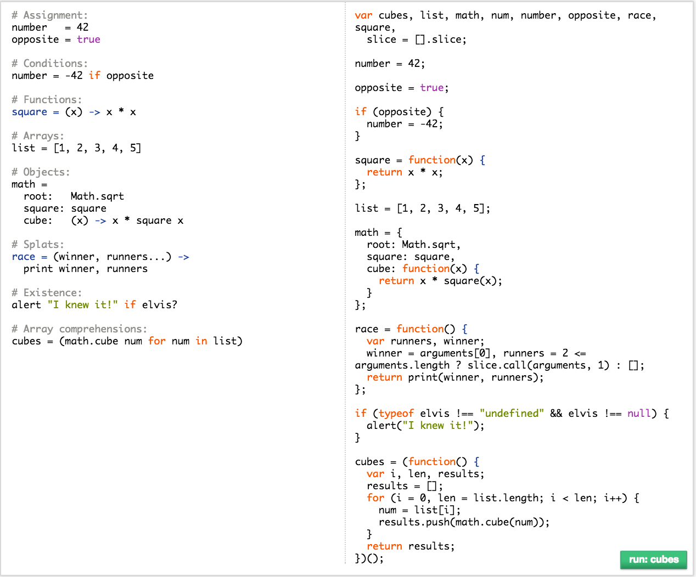

Getting started with CoffeScript
Everyone needs a little coffee to get going in the morning, but what is CoffeeScript? CoffeeScript is a programming language built off the principles of JavaScript with a heavy syntax influence from Ruby.
The goal of CoffeeScript is to make machine readable code that is also human readable. This helps a lot in software engineering since often times you are not working on your own code, and even if you are, you may have written it months ago. What if you could read your code like a book? CoffeeScript aims to be as close to that as possible.
Ready to write some CoffeeScript? Hold on there sparky, you are going to need a few things first and you need to know something about the language as well. CoffeeScript is a compiled language meaning that before the browser can run your awesome new app, you need to convert it to JavaScript. Sounds like hard work, but fear not, CoffeeScript has that covered.
Getting Started
In order to compile your code after you write it in CoffeeScript you need to instal CoffeeScript. If you haven't already installed Node on your machine, please checkout the post here on installing Node using NVM.
The next step I would suggest is get syntax highlighting for CoffeeScript for your favorite text editor. I use Sublime so for me I found my syntax highlighter through Sublime Package Control. If you don't have that I would highly suggest it because it makes installing plugins for Sublime painless. The CoffeeScript syntax highlighter I use is called Better CoffeeScript
Compile as you go
coffee --output compiled --map --watch --compile ./
Got your attention, now didn't I? Running this command in the root of your project will make all the CoffeeScript magic happen. Let's take a look at what each of these commands actually mean. coffee is the keyword for coffee-script and everything after it is your command options. --output or -o for short tells CoffeeScript to write all of the compiled JavaScript to the provided folder name. In this case it is 'compiled'.
--map or -m provides source code mapping from CoffeeScript to JavaScript and back again. Clicking on a line of compiled JavaScript in your devtools will select the corresponding line in your CoffeeScript. Very nice for matching uncaught exceptions to their original lines.
--watch or --w is your watch option, this means that it will watch the provided file or folder and any changes to it will be immediately compiled. This combined with live-server and you can have dynamically updated webpages during development with CoffeeScript. ./ simply selects the root and all subfolders in your project. Kind of the shotgun approach but if you are dealing with multiple .coffee files in your project, you will like that option.
Syntax differences
I won't go into the details of how CoffeeScript is different from JavaScript other than to show you this graphic I shamelessly took from CoffeeScript.org. This is a quick side by side comparison with several of the more common JavaScript concepts. On the left is CoffeeScript, on the right is the corresponding JavaScript.

The Future in CoffeeScript
I personally enjoyed learning CoffeeScript and would consider using it in the future. I enjoyed the brevity of the code, the simplicity of it's design and the fact that it forces you to be very clear in your intent with the use of whitespace to declare functional blocks.
Plus if you ever get stuck on what the correct CoffeeScript to use as you are initially learning it, there is always JS2.coffee which is a great site that does a translation from JavaScript to CoffeeScript. I would not suggest learning CoffeeScript at the expense of learning JavaScript because in the end, CoffeeScript is simply a syntactic overlay on the core of what JavaScript is.